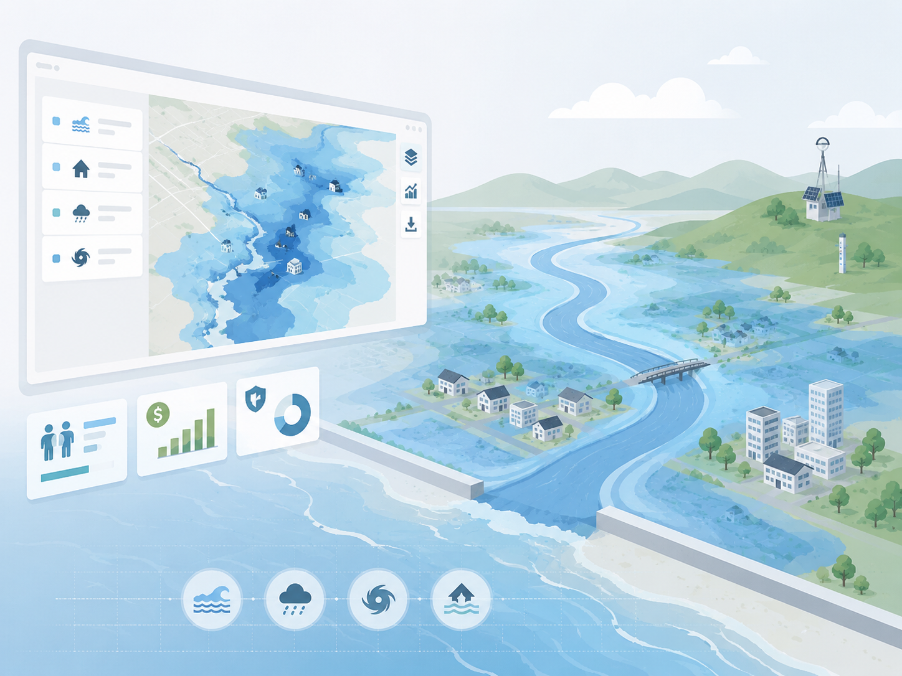

Live platform
MANAGE
Multi-hAzard flood informatioN system for coAstal reGions — a web repository of flood hazards, physical and socio-economic vulnerabilities, and bivariate flood risks at the finest administrative scale.